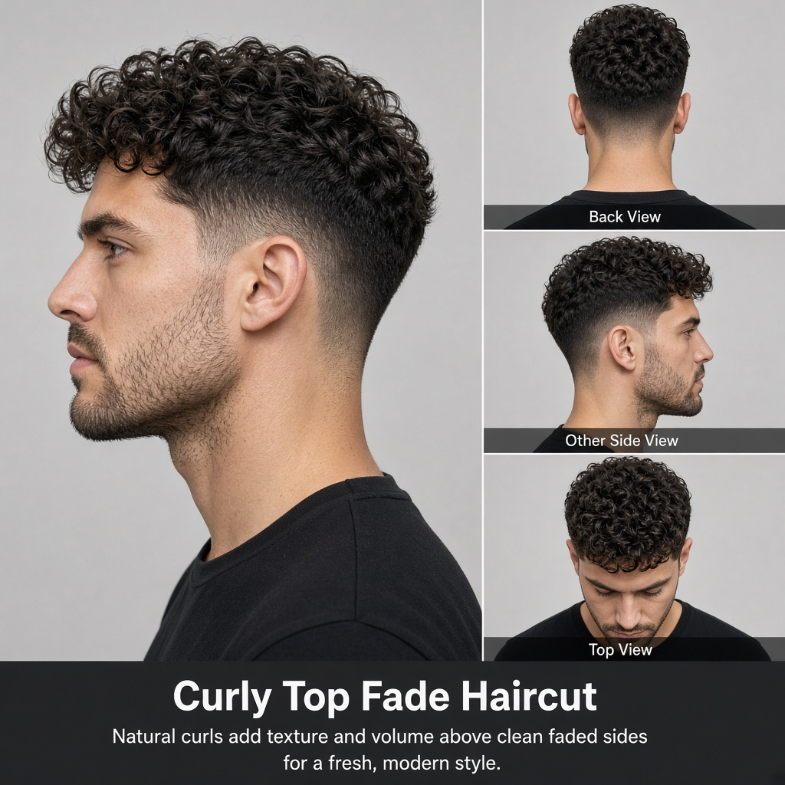

Burst Fade
Curved fade around the ears
YOUR STYLE. YOUR CHOICE.
Explore professional haircut reference images. Tap any style to view it larger and swipe through the gallery.
Explore the menu ↓
THE LOOKBOOK
Each poster includes multiple views to help you and your barber understand the haircut.
Curved fade around the ears
Alternative reference
Side-swept and polished
Alternative reference
Natural curls and clean sides
High contrast and sharp edges
Defined height and shape
Low fade with skin finish
Alternative reference
Balanced skin-level blend
Soft, subtle gradient
Alternative reference
Short textured top with clean sides
Volume at the front with faded sides
Short fringe with a neat cropped top
Longer top brushed back over short sides
Natural curls with a sharp fade
Relaxed forward fringe with texture
Defined side part with tapered sides
Lifted front with a smooth fade
Short, tidy top with faded sides
Piecey spikes with a modern finish
Very short top with faded sides
Side-swept top with blended sides
Close-cut sides with a compact top
Subtle taper around the temples and neckline
Balanced fade through the sides
High-placed fade for a bold contrast
Fade that curves down behind the ear
Rounded fade around the ear
Raised centre with shorter sides
Defined curls falling forward
Messy volume with a lifted front
Neat side part with a timeless shape
Longer back with faded sides
Natural texture shaped with tapered edges
Professional hairstyle reference
Alternative model reference
Professional hairstyle reference
Alternative model reference
Professional hairstyle reference
Alternative model reference
Professional hairstyle reference
Alternative model reference
Professional hairstyle reference
Alternative model reference
Professional hairstyle reference
Alternative model reference
Professional hairstyle reference
Alternative model reference
Professional hairstyle reference
Alternative model reference
Professional hairstyle reference
Alternative model reference
Professional hairstyle reference
Alternative model reference
Professional hairstyle reference
Alternative model reference
Professional hairstyle reference
Alternative model reference
Professional hairstyle reference
Alternative model reference
Compare three distinct finishes
Compare three distinct finishes
Defined curls on top with a gradual fade through the sides.
An alternate curly fade reference showing the side transition and curl shape.
A second model reference for a textured curly fade.
Natural curls directed forward to create a defined curly fringe.
A taller, defined curly top with shorter sides.
An alternate high-top silhouette with visible curl texture.
Defined curls with a subtle taper around the temples and neckline.
Natural curls concentrated on top with shorter, neatly shaped sides.
An alternate curly-top reference with natural volume.
Longer curls on top contrasted with distinctly shorter undercut sides.
An alternate undercut reference showing the contrast between curls and sides.
Medium-length curls with natural volume and defined texture.
An alternate medium-length curly hairstyle reference.
A further model reference showing medium curl length and shape.
Soft, relaxed waves with natural movement and a clean silhouette.
An alternate natural-waves reference with relaxed texture.
A further natural-waves reference showing a different model and finish.
Short, compact curls with a tidy cropped silhouette.
An alternate short curly crop with clearly defined curls.
A further short curly crop reference showing the side profile.
An additional short curly crop reference with a compact shape.
Separated waves with dimensional movement and natural texture.
An alternate textured-waves style with visible strand separation.
A further textured-waves reference with a different model.
An alternate angle showing the shape and flow of textured waves.
A model reference with defined waves and a textured finish.
An additional textured-waves reference with natural movement.
A further reference for dimensional, separated waves.
An alternate model reference for textured waves.
A lifted front with natural waves and a softly swept-back shape.
An alternate wavy quiff with visible front volume.
A further wavy quiff reference with textured movement.
An alternate model reference showing a fuller wavy quiff.
A further wavy quiff reference with a defined front lift.
An additional wavy quiff reference with natural wave texture.
Naturally wavy hair arranged around a clean side part.
An alternate side-part reference showing the wave direction.
A further model reference for a naturally wavy side part.
Defined curls concentrated on top with shorter, neatly shaped sides.
A lifted front with natural waves and a softly swept-back shape.
A fuller wavy quiff with visible front volume and textured movement.
Soft, relaxed waves with natural movement and a clean silhouette.
An alternate natural-waves reference with a smoother, controlled finish.
Defined curls on top with a tapered outline around the sides and back.
Naturally wavy hair arranged around a clean side part.
An alternate view showing the side part, front volume, and side profile.
No styles found. Try another search.
These are haircut reference posters. Confirm the exact style with your barber before cutting. Includes original PDF reference images, with exact and near-identical repeats removed.
READY FOR A FRESH LOOK?